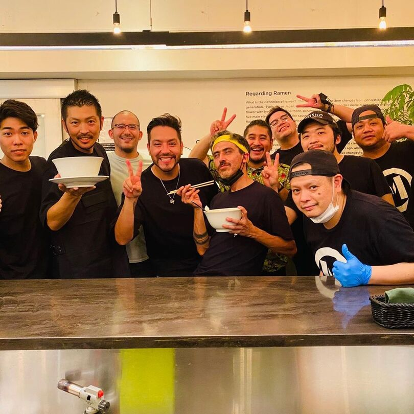
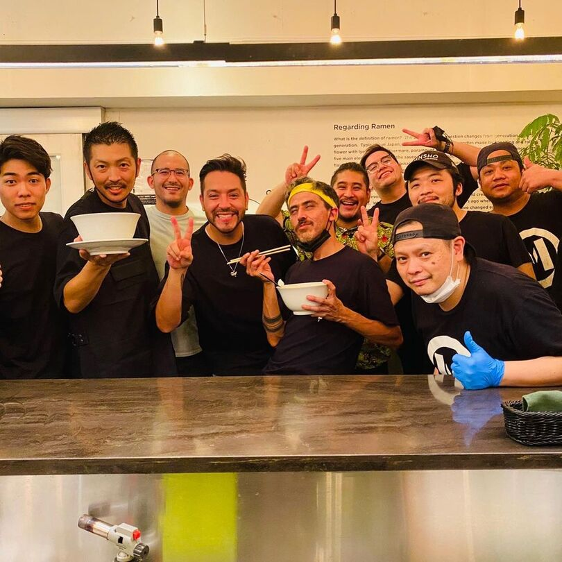

Somos Oishii Ramen
Oishii Ramen comenzo con un pequeño emprendimiento en 2013.
Cocinabamos mayoritariamente para amigos y familia, hasta poco a poco
ir ganando un lugarcito en el corazon de mas personas interesadas en
viajar con el sabor.
Gracias a mucho apoyo y esfuerzo logramos noche a noche ir
construyendo nuestro espacio soñado y crecer, enfocandonos
incansablemente en brindar una experiencia 100% japonesa para nuestros
clientes, con nuestros cocineros trabajando duro en conseguir los
mejores ingredientes locales para poder recrear y refinar las recetas
originales.
Este negocio se convirtio en el lugar donde todos son bienvenidos a desconectarse, con un ambiente amable y tradicional que te invita a soñar, buscando que cada visita sea inolvidable.
Hoy ya estamos considerando abrir un segundo restaurante y no podemos
estar mas agradecidos, con los que estuvieron en un principio y con
los que vendran.
Nada de esto hubiese sido posible sin el esfuerzo de nuestros integrantes, las mejores personas con las que se puede trabajar y en todos los que confiaron en nosotros, ahora y siempre...
Hontoni arigato gozaimasu!


 
